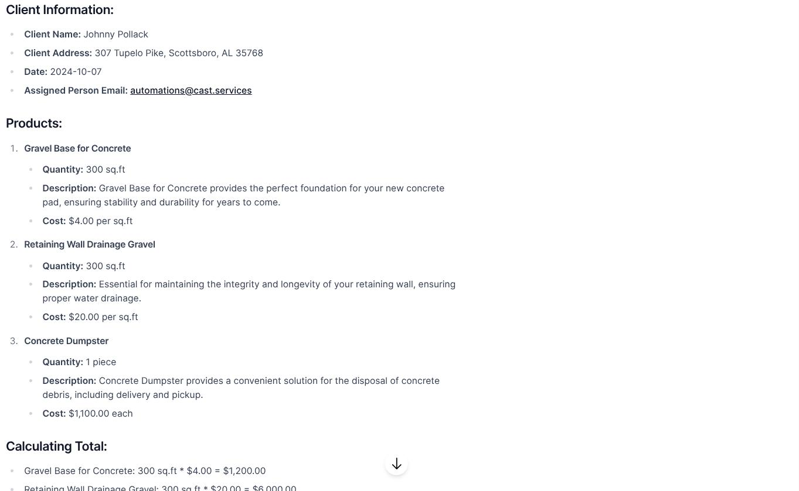
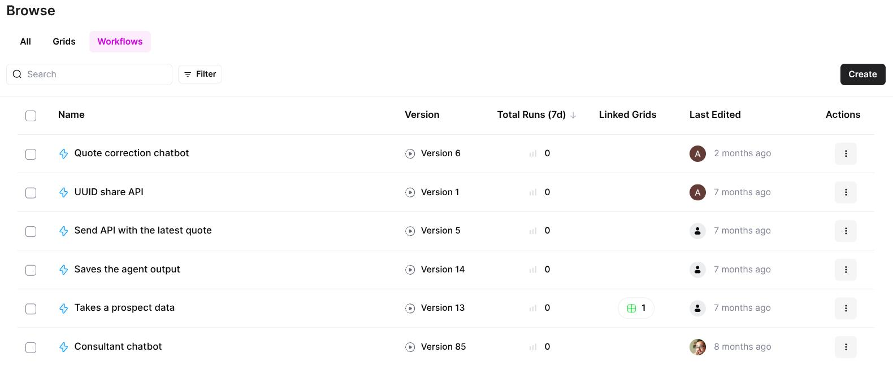

Human-Like Field Chatbot Interface

Interactive chatbot dialog confirming client details, collecting product specifications, and guiding field staff through structured quote creation
Delivered as a mobile/tablet-friendly chatbot interface designed for field crews to use on-site
during client meetings, with conversational AI guiding them through project scoping.
Interface Type:
Conversational chatbot (mobile/tablet optimized)
Guided Questioning:
Intelligent prompts to collect dimensions, materials, conditions, optional services
Data Validation:
Real-time input verification ensuring completeness before quote generation
Conversation Flow:
Client confirmation → Product selection → Quantity input → Quote generation
Document Parsing & PDF Recognition Layer
Implemented PDF and document AI to ingest job drawings and extract key project signals, handling
messy real-world inputs that field teams encounter.
Input Handling:
PDF drawings, photos, multi-page documents, inconsistent layouts
Extraction Targets:
Scope items, measurements, location context, material specifications
Preprocessing:
Document normalization to handle low-quality PDFs and partial information
Integration:
Extracted data flows into structured project model for quote calculation
Structured Project Data Model
Normalized field responses and extracted document data into a clean project JSON schema,
ensuring consistent data structure regardless of input source.
Client Data:
Identity, address, contact information, visit date
Scope Items:
Line items with quantities, materials, dimensions, service types
Pricing Logic:
Unit pricing rules, calculation formulas, discount structures
Contract Metadata:
Signature-ready fields, legal terms, service agreements
Quote Calculation Engine

AI-generated quote showing client information, itemized products (Gravel Base, Retaining Wall Drainage, Concrete Dumpster) with quantities, descriptions, costs, and calculated totals
Built automated quote composition that converts scope items into professional, itemized cost
breakdowns with proper formatting and calculation accuracy.
Calculation Logic:
Unit pricing × quantity, subtotal aggregation, total calculation
Pricing Structure:
Per square foot rates, per-piece costs, optional add-ons and bundles
Output Format:
Human-readable quote document + structured JSON for CRM/accounting systems
Itemization:
Product name, quantity, description, unit cost, line total, grand total
Contract Generation Automation
Generated customized contracts using dynamic templating, injecting client and project data into
professional document formats with legal clauses and service terms.
Template System:
Dynamic contract generation with client + project field injection
Document Sections:
Client info, pricing breakdown, scope of work, legal clauses, service terms
Customization:
Job-type specific templates while maintaining consistent structure
Output:
Manager-ready contract document without manual formatting required
Workflow Orchestration & Delivery Routing

AirOps workflow management showing automation flows: Quote correction chatbot, UUID share API, Send API with latest quote, Saves agent output, Takes prospect data, Consultant chatbot
Implemented automation flows using AirOps to orchestrate the entire quote-to-contract pipeline,
routing outputs to managers and handling failure cases gracefully.
Automation Platform:
AirOps workflows for orchestration, API routing, data management
Workflow Steps:
Capture → Parse → Calculate → Generate contract → Route to manager
Delivery Outputs:
Quote summary, calculated totals, contract document, extracted job details
Fail-Safe Handling:
Partial inputs produce usable drafts instead of blocking entire flow
CRM Integration:
Cast CRM and Construction CRM (Contractor Foreman, AccuLynx, RepairCRM) connections
CRM & Business System Integration
Designed the system to integrate with multiple CRM platforms and business tools, ensuring
quote and contract data flows into existing operational systems.
Lead Management:
Inbound leads flow through Cast CRM with automated routing
Construction CRM:
Integration with Contractor Foreman, AccuLynx, RepairCRM for project management
Accounting Integration:
Quote data formatted for QuickBooks, Xero, and other accounting platforms
Communication Tools:
Client communication via email campaigns and calls from integrated systems